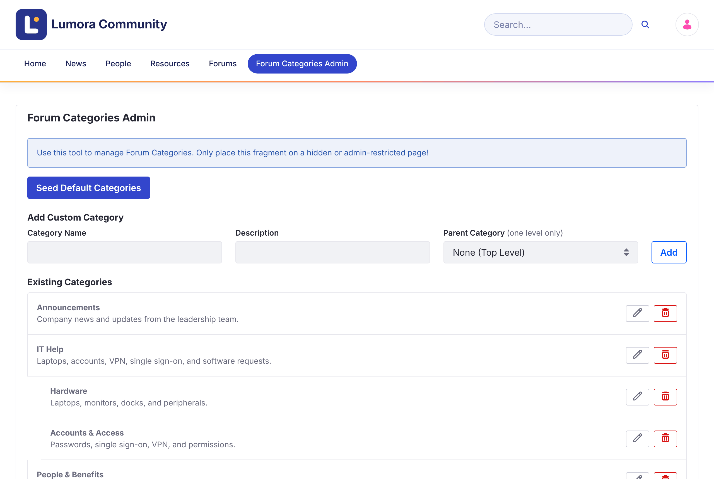

Managing Categories
Every topic belongs to a category. A new forum site has no categories, so create them before members start posting.
Managing categories needs the Forum Category Admin role, or Liferay’s Administrator role. They see Forum Categories Admin in the forum’s navigation.

Adding the Default Categories
Click Seed Default Categories to add four starter categories: General Discussion, Technical Help, Feature Requests, and Best Practices. Edit or delete them as you like.
Adding a Category
-
Under Add Custom Category, enter a Category Name and an optional Description.
-
To make it a subcategory, choose its Parent Category. Leave None (Top Level) for a top-level category.
-
Click Add.
Categories have one level of subcategories. A category that has subcategories stays at the top level.
Editing or Deleting a Category
Use the Edit (pencil) and Delete (trash) buttons next to a category.
Deleting a category also deletes its subcategories. Their topics aren’t deleted: they lose the category and stay listed under All Discussions. This can’t be undone.
Categories are Liferay categories in the site’s Forum Categories vocabulary, so you can also manage them in Site Menu → Categorization → Categories.